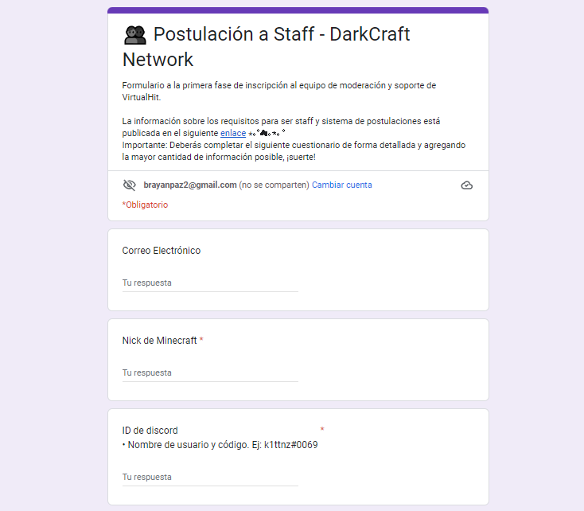

Únete al equipo de Staff de moderación.
üìë Requisitos:
- Saber como funcionan las mecánicas de las modalidades del servidor.Hacer uso de buena ortografía y tener un léxico amplio, buen comportamiento en todos los servicios de la Network, responsabilidad, seriedad cuando es necesaria, actividad y compromiso en el cargo.Disponer del tiempo suficiente para cumplir las funciones del staff.No compartir tu cuenta de discord ni de minecraft.No ser staff de otro servidor.
üìú ¬øC√≥mo funciona el sistema de postulaciones?
Nuestra selección de staffs consta de dos fases. La primera es un formulario adjunto abajo que deberás completar detalladamente haciendo uso de buena ortografía, un amplio vocabulario, precisión en lo que las preguntas solicitan, y sobre todo honestidad.
Estaremos avisando por #anuncios en nuestro discord quienes son aquellas personas que pasaron la primera fase de las postulaciones y pasarán a una segunda, en la que serán evaluados mediante una entrevista por voz.
La información y preguntas de ambas fases son confideciales y únicamente se la brindaremos a las personas seleccionadas.
Si tu usuario de discord no se encuentra en el mensaje anunciado, significará que tu postulación fue denegada. Sin embargo podrás volver a postularte después de tres semanas de tu primer intento, ¡siempre tendrás oportunidad de hacerlo!
üë• Postulaci√≥n a Staff - DarkCraft Network
Formulario a la primera fase de inscripción al equipo de moderación.
